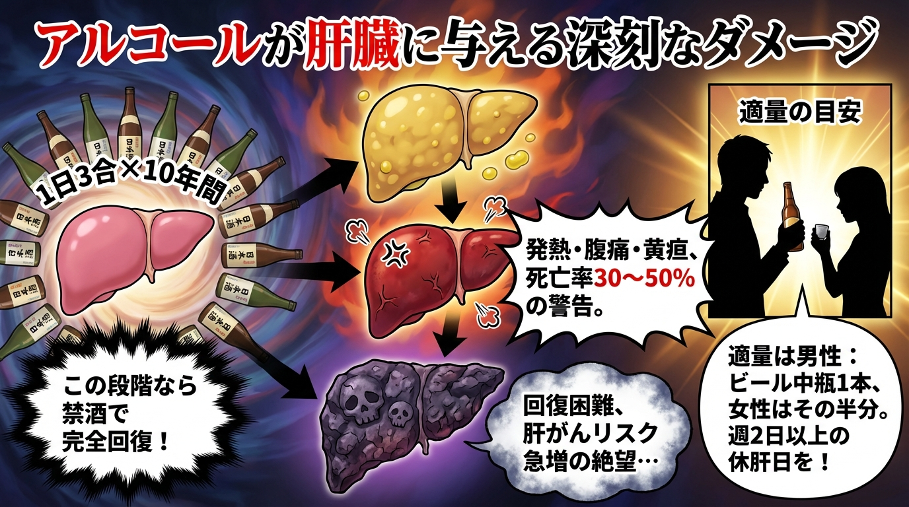
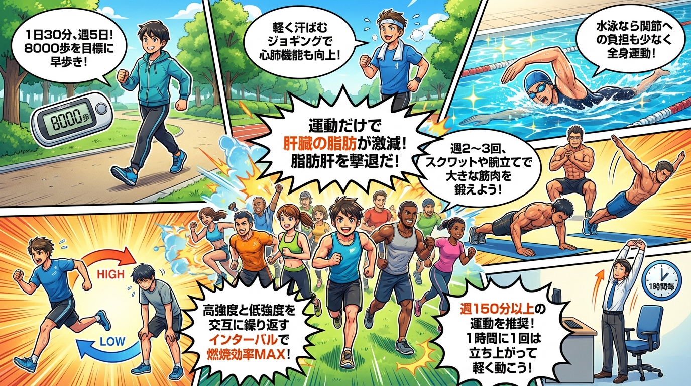

🎨 4コマ漫画で理解する

subtitle_1: 沈黙の臓器・肝臓の驚くべき機能
📊 図解で理解する

肝臓は「沈黙の臓器」と呼ばれ、約500種類もの生化学反応を担う人体最大の化学工場です。重さは約1.2〜1.5kgで、血液の約13%が常時肝臓を通過しています。主な機能として、①代謝機能（糖質・脂質・タンパク質の代謝）、②解毒機能（アルコール、薬物、アンモニアの無毒化）、③胆汁生成（脂肪の消化を助ける）、④貯蔵機能（グリコーゲン、ビタミン、鉄分の貯蔵）があります。
肝臓の驚異的な点は、その再生能力です。70%を切除しても約8週間で元の大きさに戻ります。しかし、この再生能力があるがゆえに、初期の肝障害では自覚症状がほとんどありません。症状が現れた時には、すでに肝機能の60〜70%が失われていることも珍しくありません。
40歳を過ぎると、肝細胞の再生速度が低下し、飲酒習慣や食生活の乱れによる脂肪肝のリスクが急上昇します。日本では成人の約30%、肥満者では80%以上が脂肪肝と推定されています。
subtitle_2: アルコールが肝臓に与える深刻なダメージ
📊 図解で理解する
アルコールは肝臓で「アセトアルデヒド」という有害物質に分解されます。このアセトアルデヒドが肝細胞を直接攻撃し、炎症や線維化を引き起こします。日本酒換算で1日3合以上を10年間飲み続けると、約80%の人に肝障害が生じるというデータがあります。
アルコール性肝障害は3段階で進行します。第1段階は「アルコール性脂肪肝」で、肝細胞に中性脂肪が蓄積した状態。この段階では禁酒により完全に回復可能です。第2段階は「アルコール性肝炎」で、肝細胞が炎症を起こし破壊されます。発熱、腹痛、黄疸などの症状が現れ、重症例では死亡率が30〜50%に達します。第3段階は「アルコール性肝硬変」で、肝臓が硬く縮み、機能が著しく低下します。この段階では回復は困難で、肝がんのリスクも急増します。
「適量」の目安は、純アルコール換算で男性は1日20g以下（ビール中瓶1本、日本酒1合、ウイスキーダブル1杯程度）、女性はその半分です。週に2日以上の「休肝日」を設けることで、肝臓の修復時間を確保できます。
subtitle_3: 非アルコール性脂肪肝（NAFLD）の新常識
📊 図解で理解する

お酒を飲まない人でも脂肪肝になる「非アルコール性脂肪肝疾患（NAFLD）」が急増しています。日本では成人の約25〜30%がNAFLDと推定され、その10〜20%が「非アルコール性脂肪肝炎（NASH）」へと進行します。NASHは肝硬変や肝がんへと進展するリスクが高く、新たな国民病として注目されています。
NAFLDの主な原因は、過剰なカロリー摂取と運動不足による内臓脂肪の蓄積です。特に「果糖」の過剰摂取が問題視されています。果糖は肝臓で直接中性脂肪に変換されやすく、清涼飲料水や果汁ジュースの飲み過ぎは脂肪肝の大きなリスクファクターです。500mlのコーラには角砂糖約15個分の糖質が含まれており、毎日飲むと確実に肝臓に脂肪が蓄積します。
診断には腹部超音波検査や血液検査（ALT、AST、γ-GTPの上昇）が用いられます。早期発見が重要で、健康診断で「肝機能異常」を指摘されたら、必ず精密検査を受けましょう。
subtitle_4: 肝臓を修復する食事療法
📊 図解で理解する

脂肪肝を改善するには、適正カロリーの摂取と栄養バランスが重要です。目標は3〜6ヶ月で体重の7〜10%減少。急激な減量は逆に肝臓に負担をかけます。
【肝臓に良い食品】
①青魚（サバ、イワシ、サンマ）：オメガ3脂肪酸が肝臓の炎症を抑制
②大豆製品（豆腐、納豆）：良質なタンパク質が肝細胞の修復を促進
③緑黄色野菜（ブロッコリー、ほうれん草）：抗酸化物質が肝臓を保護
④キノコ類：食物繊維が脂質の吸収を抑制
⑤ナッツ類（クルミ、アーモンド）：ビタミンEが肝細胞の酸化を防ぐ
⑥コーヒー（1日3杯）：クロロゲン酸が脂肪肝の改善に有効
【避けるべき食品】
①清涼飲料水、果汁ジュース：果糖が肝臓に直撃
②菓子パン、ケーキ：精製糖質と脂質の組み合わせが最悪
③揚げ物、ファストフード：トランス脂肪酸が肝臓の炎症を悪化
④加工肉（ハム、ソーセージ）：添加物と飽和脂肪酸が多い
夕食は就寝3時間前までに済ませ、夜間の肝臓修復時間を確保します。
subtitle_5: 肝機能を高める運動習慣
📊 図解で理解する
運動は脂肪肝改善の最も効果的な方法です。有酸素運動により内臓脂肪が燃焼し、肝臓に蓄積した中性脂肪も減少します。週に150分以上の中強度運動（早歩き、軽いジョギング、水泳など）が推奨されます。
【効果的な運動プログラム】
①ウォーキング：1日30分×週5日、歩数計で1日8000歩を目標
②筋力トレーニング：週2〜3回、大きな筋肉群（太もも、背中、胸）を鍛える
③インターバルトレーニング：高強度運動と低強度運動を交互に行い、脂肪燃焼効果を最大化
研究によれば、体重を減らさなくても運動だけで肝臓の脂肪を20〜30%減少させることができます。運動により筋肉でのインスリン感受性が高まり、肝臓への糖の流入が減少するためです。
座りっぱなしの時間を減らすことも重要です。1時間に1回は立ち上がり、3〜5分の軽い運動を取り入れましょう。
subtitle_6: 肝臓の健康を守る生活習慣チェックリスト
📊 図解で理解する

【毎日の習慣】
□ 朝食を抜かない（肝臓のエネルギー供給を安定化）
□ 水分を1.5〜2L摂取（解毒作用をサポート）
□ 就寝前3時間は食べない（肝臓の修復時間を確保）
□ 7時間以上の睡眠（成長ホルモンが肝細胞を修復）
□ ストレス管理（コルチゾール過剰が脂肪肝を悪化）
【定期チェック】
□ 年1回の血液検査（ALT、AST、γ-GTP、血小板数）
□ 腹部超音波検査（脂肪肝の有無を確認）
□ 体重・腹囲測定（内臓脂肪の変化をモニタリング）
【要注意サイン】
①慢性的な疲労感・倦怠感
②食欲不振、吐き気
③右上腹部の鈍痛
④黄疸（白目や皮膚が黄色くなる）
⑤手のひらが赤くなる（肝硬変のサイン）
これらの症状があれば、すぐに医療機関を受診してください。肝臓は沈黙の臓器ですが、適切なケアにより確実に応えてくれる臓器でもあります。今日から始める小さな習慣が、10年後、20年後の肝臓の健康を決定づけます。